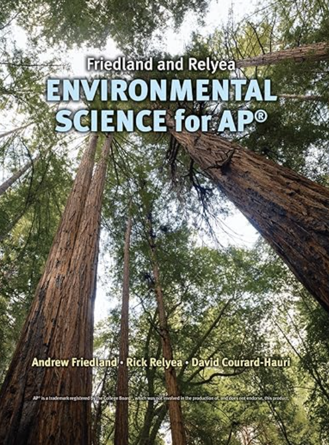

Studying Smart
Home
Subjects
Book Guides
Textbook Solutions
About

Environmental Science for AP
1st Edition
ISBN: 9780716738497
Andrew Friedland, David Courard-Hauri, Rick Relyea
Chapter 1: Studying the State of Our Earth
Page 23: Multiple-Choice Questions
Page 24: Free-Response Questions
Chapter 2: Environmental Systems
Page 44: Do The Math: The Mystery of the Missing Salt
Page 49: Multiple-Choice Questions
Page 51: Measuring Your Impact
Page 51: Free-Response Questions
Chapter 3: Ecosystem Ecology
Page 78: Do the Math: Raising Mangoes
Page 82: Multiple-Choice Questions
Page 84: Measuring Your Impact
Page 84: Free-Response Questions
Chapter 4: Global Climates and Biomes
Page 115: Multiple-Choice Questions
Page 116: Free-Response Questions
Page 116: Measuring Your Impact
Chapter 5: Evolution of Biodiversity
Page 141: Multiple-Choice Questions
Page 142: Free-Response Questions
Page 143: Measuring Your Impact
Chapter 6: Population and Community Ecology
Page 174: Multiple-Choice Questions
Page 176: Free-Response Questions
Page 177: Measuring Your Impact
Chapter 7: The Human Population
Page 199: Multiple-Choice Questions
Page 200: Free-Response Questions
Page 201: Measuring Your Impact
Chapter 8: Earth Systems
Page 231: Multiple-Choice Questions
Page 232: Free-Response Questions
Page 233: Measuring Your Impact
Chapter 9: Water Resources
Page 254: Multiple-Choice Questions
Page 255: Free-Response Questions
Page 255: Measuring Your Impact
Chapter 10: Land, Public and Private
Page 279: Multiple-Choice Questions
Page 281: Measuring Your Impact
Page 281: Free-Response Questions
Chapter 11: Feeding the World
Page 306: Multiple-Choice Questions
Page 308: Free-Response Questions
Page 309: Measuring Your Impact
Chapter 12: Renewable Energy Sources
Page 339: Multiple-Choice Questions
Page 340: Free-Response Questions
Page 341: Measuring Your Impact
Chapter 13: Achieving Energy Sustainability
Page 373: Multiple-Choice Questions
Page 375: Free-Response Questions
Page 375: Measuring Your Impact
Chapter 14: Water Pollution
Page 404: Multiple-Choice Questions
Page 406: Free-Response Questions
Page 407: Measuring Your Impact
Chapter 15: Air Pollution and Stratospheric Ozone Depletion
Page 432: Multiple-Choice Questions
Page 433: Free-Response Questions
Page 434: Measuring Your Impact
Chapter 16: Waste Generation and Waste Disposal
Page 459: Multiple-Choice Questions
Page 460: Free-Response Questions
Page 461: Measuring Your Impact
Chapter 17: Human Health and Environmental Risks
Page 486: Multiple-Choice Questions
Page 488: Measuring Your Impact
Page 488: Free-Response Questions
Chapter 18: Conservation of Biodiversity
Page 514: Multiple-Choice Questions
Page 515: Free-Response Questions
Page 515: Measuring Your Impact
Chapter 19: Global Change
Page 545: Multiple-Choice Questions
Page 546: Measuring Your Impact
Page 546: Free-Response Questions
Chapter 20: Sustainability, Economics, and Equity
Page 568: Multiple-Choice Questions
Page 570: Free-Response Questions
Page 570: Measuring Your Impact